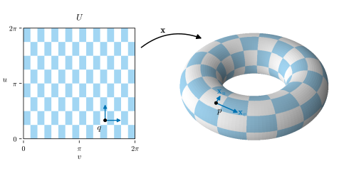
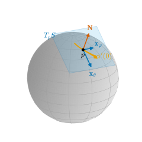
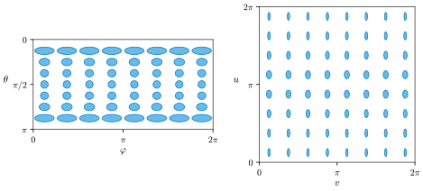

0.3 Surfaces and Tangent Planes
Goals
- parametrization을 UV 좌표로 이해하고, regular surface가 무엇인지 말로 설명할 수 있다.
- tangent plane과 unit normal vector를 parametrization이나 implicit equation에서 계산할 수 있다.
- first fundamental form \(E, F, G\)로 surface 위의 길이, 각, 넓이를 계산하고, UV map의 왜곡을 읽을 수 있다.
- isometry, conformal map, 넓이를 보존하는 map의 차이를 \(E, F, G\)로 설명할 수 있다.
Prerequisites
- Section 0.1: linear approximation, intrinsic과 extrinsic(Definition 0.1.1)
- Section 0.2: 속도벡터, 곡선의 길이((0.2.1))
- 미적분: partial derivative, 2변수 함수의 chain rule, 이중적분. 행렬·벡터: inner product, cross product, symmetric matrix의 eigenvalue
Motivation
Section 0.2에서 곡선은 매개변수 하나로 움직이는 점이었다. surface는 매개변수가 둘 필요하다. 그래픽스에는 이미 익숙한 예가 있다. textured mesh의 각 점에는 texture image 안의 좌표 \((u, v)\)가 붙어 있다(UV 좌표). 거꾸로 보면 UV 평면의 영역에서 \(\R^3\)으로 가는 map이 surface를 그린다. 이 절은 세 질문에 답한다.
- 어떤 map이 surface를 “제대로” 그리는가? (parametrization)
- 한 점에서 surface의 평평한 근사는 무엇이고, 바깥쪽은 어디인가? (tangent plane과 normal vector)
- UV 평면의 길이와 넓이는 실제 surface에서 얼마인가? 곧 texture는 얼마나 늘어나고 찌그러지는가? (first fundamental form)
Parametrizations: UV Coordinates
Definition 0.3.1 (parametrization and regular surface, simplified). \(U \subseteq \R^2\)가 open set이고 \(\mathbf{x}\colon U \to \R^3\), \((u, v) \mapsto \mathbf{x}(u, v)\)가 smooth map이라 하자. 다음 두 조건을 만족하면 \(\mathbf{x}\)를 parametrization(매개화)이라 한다.
- (1) \(\mathbf{x}\)는 일대일이고, \(\mathbf{x}\)와 그 역이 모두 연속이다(image 위로의 homeomorphism).
- (2) 모든 점에서 partial derivative \(\mathbf{x}_u, \mathbf{x}_v\)가 linearly independent다. 곧 \(\mathbf{x}_u \times \mathbf{x}_v \neq 0\)이다.
집합 \(S \subseteq \R^3\)의 모든 점 근처가 parametrization 하나의 image로 덮이면 \(S\)를 regular surface(정칙곡면)라 한다. 여기서는 “근처”를 엄밀히 정의하지 않았다. 정확한 정의는 Definition 6.1.1이다.
조건 (2)는 regular curve의 \(\gamma' \neq 0\)(Definition 0.2.1)에 해당한다. 어느 방향으로도 UV 좌표가 한 점으로 뭉개지지 않는다는 뜻이다. 조건 (1)은 surface가 스스로를 뚫고 지나가거나 한 점에 두 UV 좌표가 붙는 것을 막는다.
Example 0.3.2 (sphere, cylinder, and torus of revolution). Tour의 running example 세 surface와 그 parametrization이다.
- sphere \(S^2(r)\): \(\mathbf{x}(\theta, \varphi) = (r\sin\theta\cos\varphi,\ r\sin\theta\sin\varphi,\ r\cos\theta)\), \(0 \lt \theta \lt \pi\), \(0 \lt \varphi \lt 2\pi\). \(\theta\)는 북극에서 잰 각(colatitude), \(\varphi\)는 경도다. image는 \(x^2 + y^2 + z^2 = r^2\)에서 두 극을 잇는 반원 하나(\(\varphi = 0\), 두 극 포함)를 뺀 것이다.
- cylinder: \(\mathbf{x}(u, v) = (r\cos u,\ r\sin u,\ v)\), \(0 \lt u \lt 2\pi\), \(v \in \R\). image는 \(x^2 + y^2 = r^2\)에서 직선 하나를 뺀 것이다.
- torus of revolution \(T_{R,r}\) (\(0 \lt r \lt R\)): \(\mathbf{x}(u, v) = \big((R + r\cos u)\cos v,\ (R + r\cos u)\sin v,\ r\sin u\big)\), \(0 \lt u, v \lt 2\pi\). 반지름 \(r\)인 원(관을 자른 자리, 각 \(u\))을 \(z\)축 둘레로 돌린 것(각 \(v\))이다. image는 \(\big(\sqrt{x^2 + y^2} - R\big)^2 + z^2 = r^2\)에서 원 두 개를 뺀 것이다.
위의 parametrization은 모두 곡선 하나나 둘을 빠뜨리고, 빠진 곳은 다른 parametrization(예: 돌린 것)으로 덮는다. 특히 sphere와 torus of revolution은 compact이므로 어떤 parametrization 하나로도 전체를 덮을 수 없다(open set \(U\)와 homeomorphic한 집합은 compact일 수 없다). 닫힌 mesh의 UV를 펼 때 seam을 잘라야 하는 것도 같은 종류의 제약이다. 닫힌 surface 전체를 평면에 일대일·연속으로 펼 수는 없다.
Verification: verify/v-0-3-surfaces.py
세 surface는 모두 방정식 하나 \(f(x, y, z) = 0\)의 해집합으로도 주어진다. 일반적으로 \(f = 0\)인 모든 점에서 gradient \(\grad f \neq 0\)이면 \(f^{-1}(0)\)은 regular surface다(Theorem 6.5.3). 그래픽스와 3D vision의 implicit surface, 예를 들어 signed distance function(SDF)의 zero level set이 이렇게 주어진 surface다.

Tangent Plane and Normal Vector
곡선의 linear approximation이 접선이었던 것처럼, surface의 linear approximation은 평면이다. UV 좌표의 한 방향으로만 움직인 곡선 \(u \mapsto \mathbf{x}(u, v_0)\)와 \(v \mapsto \mathbf{x}(u_0, v)\)의 속도벡터가 \(\mathbf{x}_u\)와 \(\mathbf{x}_v\)이고, 이 둘이 그 평면을 펼친다.
Definition 0.3.3 (tangent plane and unit normal vector). parametrization \(\mathbf{x}\)와 \(p = \mathbf{x}(q)\)에 대해
\[ T_pS = \{\, a\,\mathbf{x}_u(q) + b\,\mathbf{x}_v(q) : a, b \in \R \,\} \]
를 \(p\)에서 \(S\)의 tangent plane(접평면)이라 한다. 이것은 \(S\) 위에서 \(p\)를 지나는 모든 곡선 \(\alpha\)의 속도벡터 \(\alpha'(0)\)의 모임과 같고, 그래서 parametrization을 어떻게 골라도 같다. 또
\[ \mathbf{N}(p) = \frac{\mathbf{x}_u \times \mathbf{x}_v}{\abs{\mathbf{x}_u \times \mathbf{x}_v}}(q) \]
를 \(p\)에서의 unit normal vector(단위법벡터)라 한다. 다른 parametrization을 쓰면 \(\mathbf{N}\)이 \(-\mathbf{N}\)으로 바뀔 수 있다.
\(T_pS\)는 원점을 지나는 \(\R^3\)의 2-dimensional subspace다. 그림에서는 그것을 \(p\)로 옮겨 그린다(Figure 0.3.2). surface가 \(f = 0\)으로 주어지면 \(T_pS\)는 \(\grad f(p)\)에 수직인 평면이고, \(\mathbf{N} = \pm\grad f/\abs{\grad f}\)이다(Proposition 6.5.4).

Example 0.3.4 (unit normal vectors of the running examples). sphere에서는 \(\mathbf{x}_\theta \times \mathbf{x}_\varphi = r\sin\theta\,\mathbf{x}\)이므로 \(\mathbf{N} = \mathbf{x}/r\), 곧 바깥쪽이다. tangent plane \(T_pS\)는 \(p\)에 수직인 평면이다. cylinder에서는 \(\mathbf{N} = (\cos u,\ \sin u,\ 0)\)으로 역시 바깥쪽이다. torus of revolution에서는 \(\mathbf{N} = -(\cos u\cos v,\ \cos u\sin v,\ \sin u)\)이고, 이것은 안쪽, 곧 관의 중심원을 향한다. 같은 공식이 surface에 따라 바깥쪽이 되기도 하고 안쪽이 되기도 한다. Section 0.4에서 curvature의 부호가 \(\mathbf{N}\)의 방향에 따라 바뀌므로 이 방향을 기억해 두자.
Verification: verify/v-0-3-surfaces.py
Measuring on the Surface: The First Fundamental Form
surface 위의 곡선을 UV 좌표로 \(\alpha(t) = \mathbf{x}\big(u(t), v(t)\big)\)라 쓰면, chain rule에서 \(\alpha' = u'\,\mathbf{x}_u + v'\,\mathbf{x}_v\)이다. 그 길이는 UV 속도 \((u', v')\)와 \(\mathbf{x}_u, \mathbf{x}_v\)의 inner product 세 개로 정해진다. 그 세 수가 UV 평면의 눈금을 실제 길이로 바꾸는 환산표다.
Definition 0.3.5 (first fundamental form). \(p \in S\)에서 quadratic form \(\mathrm{I}_p(w) = \inner{w}{w} = \abs{w}^2\) (\(w \in T_pS\))를 first fundamental form(제1기본형식)이라 한다. parametrization \(\mathbf{x}\)에서 \(w = a\,\mathbf{x}_u + b\,\mathbf{x}_v\)이면
이다. 여기서 \(E = \inner{\mathbf{x}_u}{\mathbf{x}_u}\), \(F = \inner{\mathbf{x}_u}{\mathbf{x}_v}\), \(G = \inner{\mathbf{x}_v}{\mathbf{x}_v}\)이고, 가운데 행렬은 basis \((\mathbf{x}_u, \mathbf{x}_v)\)의 Gram matrix다.
\(\mathrm{I}_p\) 자체는 \(\R^3\)의 길이를 \(T_pS\)에 제한한 것일 뿐이다. 새로운 것은 그것을 UV 좌표로 적은 coefficient \(E, F, G\)다. 이 세 함수만 있으면 surface 위의 길이, 각, 넓이를 UV 평면에서 계산할 수 있다.
두 tangent vector가 이루는 각도 Gram matrix로 계산하는 inner product에서 나온다. \(\sqrt{EG - F^2} = \abs{\mathbf{x}_u \times \mathbf{x}_v}\)는 UV 평면의 작은 칸 \(du\,dv\)가 surface 위에서 차지하는 넓이의 배율이다.
Example 0.3.6 (\(E, F, G\) of the running examples).
- sphere: \(E = r^2\), \(F = 0\), \(G = r^2\sin^2\theta\). \(\theta\) 방향 한 눈금은 실제로 \(r\,d\theta\)이고, \(\varphi\) 방향 한 눈금은 \(r\sin\theta\,d\varphi\)로 극에 가까울수록 짧다(circle of latitude의 반지름이 \(r\sin\theta\)). \(\sqrt{EG - F^2} = r^2\sin\theta\)이므로 넓이는 \(\int_0^{2\pi}\!\int_0^\pi r^2\sin\theta\,d\theta\,d\varphi = 4\pi r^2\)이다.
- cylinder: \(E = r^2\), \(F = 0\), \(G = 1\).
- torus of revolution: \(E = r^2\), \(F = 0\), \(G = (R + r\cos u)^2\). \(v\) 방향 한 눈금은 바깥쪽(\(u = 0\))에서 \((R + r)\,dv\), 안쪽(\(u = \pi\))에서 \((R - r)\,dv\)다. Figure 0.3.1의 칸이 바깥에서 넓고 안에서 좁은 이유다. 넓이는 \(4\pi^2 Rr\)이다(Exercise 0.3.2).
세 경우 모두 \(F = 0\)이다. 두 좌표 방향이 직각으로 만난다는 뜻이고, parametrization의 성질이지 surface의 성질은 아니다.
Verification: verify/v-0-3-surfaces.py
first fundamental form을 UV 평면에 그림으로 그릴 수 있다. 각 점 \(q\)에서 surface 위의 길이가 \(\varepsilon\)인 tangent vector \(w = a\,\mathbf{x}_u + b\,\mathbf{x}_v\)를 모으면, 그 UV 성분 \((a, b)\)는 ellipse \(E a^2 + 2F ab + G b^2 = \varepsilon^2\)를 이룬다(Figure 0.3.3). 반축의 방향은 Gram matrix의 eigenvector이고 길이는 \(\varepsilon/\sqrt{\lambda}\)이다(\(\lambda\)는 eigenvalue). surface 위의 작은 disk가 UV 평면에서 이 ellipse로 보이는 것이다. ellipse가 원이면 그 점에서 UV map은 모든 방향을 같은 비율로 줄이거나 늘인다. ellipse가 한쪽으로 길면, 그 방향으로는 UV의 큰 범위가 surface의 짧은 길이에 몰린다. texture가 그 방향으로 압축되어 보인다는 뜻이다.

Isometries and Conformal Maps
두 surface 사이의 map이 모든 곡선의 길이를 보존하면 isometry(등거리사상)라 한다(Definition 7.2.1). 좌표로 판정하는 방법이 있다. 같은 \(U\) 위의 두 parametrization \(\mathbf{x}\), \(\mathbf{y}\)가 모든 점에서 같은 \(E, F, G\)를 가지면, \(\mathbf{x}(q) \mapsto \mathbf{y}(q)\)는 길이를 보존한다. (0.3.2)의 적분이 같기 때문이다(Corollary 7.2.8).
Example 0.3.7 (plane and cylinder). 평면의 parametrization \((u, v) \mapsto (u, v, 0)\)과 cylinder의 parametrization \(\mathbf{y}(u, v) = \big(r\cos(u/r),\ r\sin(u/r),\ v\big)\)는 둘 다 \(E = 1\), \(F = 0\), \(G = 1\)이다(Exercise 0.3.1). 그래서 평면의 띠를 cylinder에 감는 map은 길이를 보존한다. Figure 0.1.2에서 종이를 말아도 intrinsic한 양이 변하지 않았던 이유가 이것이다. intrinsic한 양이란 \(E, F, G\)로 정해지는 양이다.
길이 대신 각만 보존하는 map을 conformal map(등각사상)이라 한다(Definition 7.4.1). 좌표로는 두 Gram matrix가 점마다 양수배 차이일 때, 곧 \((\bar E, \bar F, \bar G) = \lambda^2(E, F, G)\)일 때다(Theorem 7.4.6). 특히 \(E = G\), \(F = 0\)인 parametrization에서는 Figure 0.3.3의 ellipse가 모두 원이 된다. 작은 원은 크기만 바뀐 원으로 간다. 넓이만 보존하는 map은 \(\sqrt{EG - F^2}\)를 보존한다.
sphere를 평면에 펴는 지도에서는 셋 가운데 isometry는 불가능하고, conformal과 넓이 보존을 동시에 가질 수도 없다. 그 이유가 Section 0.5의 Theorema Egregium이다.
Summary
- parametrization \(\mathbf{x}\colon U \to \R^3\)은 UV 좌표다. 일대일이고 \(\mathbf{x}_u \times \mathbf{x}_v \neq 0\)이어야 하며, regular surface는 이런 조각들로 덮인다. \(\grad f \neq 0\)인 \(f = 0\)도 regular surface다.
- tangent plane \(T_pS\)는 \(\mathbf{x}_u, \mathbf{x}_v\)가 펼치는 평면이고 unit normal vector는 \(\mathbf{N} = \mathbf{x}_u \times \mathbf{x}_v / \abs{\mathbf{x}_u \times \mathbf{x}_v}\)다. sphere와 cylinder에서는 바깥쪽, torus of revolution에서는 안쪽이다.
- first fundamental form의 coefficient \(E, F, G\)는 Gram matrix이고, 길이 (0.3.2)와 넓이 (0.3.3)를 UV 평면에서 계산하게 해 준다. UV map의 왜곡은 Gram matrix가 정하는 ellipse로 보인다.
- \(E, F, G\)가 같으면 isometry, 비례하면 conformal, \(\sqrt{EG - F^2}\)가 같으면 넓이 보존이다.
다음 절에서는 normal vector \(\mathbf{N}\)이 점에 따라 어떻게 기우는지를 잰다. first fundamental form이 같은 평면과 cylinder를 구별하는 것, 곧 surface가 공간 안에서 휘는 정도가 그 답이다.
Quick check
Exercise 0.3.1 ★ cylinder의 parametrization \(\mathbf{y}(u, v) = \big(r\cos(u/r),\ r\sin(u/r),\ v\big)\)의 \(E, F, G\)를 구하고, 평면 \((u, v) \mapsto (u, v, 0)\)의 것과 비교하여라.
Solution
\(\mathbf{y}_u = \big(-\sin(u/r),\ \cos(u/r),\ 0\big)\), \(\mathbf{y}_v = (0, 0, 1)\)이므로 \(E = \sin^2(u/r) + \cos^2(u/r) = 1\), \(F = 0\), \(G = 1\)이다. 평면의 parametrization도 \(\mathbf{x}_u = (1, 0, 0)\), \(\mathbf{x}_v = (0, 1, 0)\)에서 \(E = 1\), \(F = 0\), \(G = 1\)이다. coefficient가 모두 같으므로 \((u, v, 0) \mapsto \mathbf{y}(u, v)\)는 길이를 보존한다(Example 0.3.7). Example 0.3.6의 \(E = r^2\)과 다른 것은 \(u\)를 각 대신 둘레를 따라 잰 길이로 바꾸었기 때문이다.
Verification: verify/v-0-3-surfaces.py
Exercise 0.3.2 ★ (0.3.3)로 torus of revolution의 넓이가 \(4\pi^2 Rr\)임을 보여라. \(R = 2\), \(r = 0.8\)이면 얼마인가?
Solution
Example 0.3.6에서 \(EG - F^2 = r^2(R + r\cos u)^2\)이고 \(R + r\cos u \ge R - r \gt 0\)이므로 \(\sqrt{EG - F^2} = r(R + r\cos u)\)이다. 따라서
\[ \begin{aligned} \int_0^{2\pi}\!\!\int_0^{2\pi} r(R + r\cos u)\,du\,dv &= 2\pi \cdot r\,(2\pi R + r\cdot 0) \\ &= 4\pi^2 Rr \end{aligned} \]
이다(\(\cos u\)의 한 주기 적분은 \(0\)). parametrization이 빠뜨린 두 원은 넓이가 \(0\)이므로 surface 전체의 넓이와 같다. \(R = 2\), \(r = 0.8\)이면 \(4\pi^2 \cdot 1.6 \approx 63.17\)이다. 바깥쪽의 넓은 칸과 안쪽의 좁은 칸이 \(\cos u\)의 적분에서 정확히 상쇄되어, 둘레 \(2\pi R\)인 cylinder를 길이 \(2\pi r\)로 자른 것과 넓이가 같다.
Verification: verify/v-0-3-surfaces.py
Exercise 0.3.3 ★ point cloud의 한 점에서 이웃의 covariance matrix를 구했더니 eigenvalue가 (a) \(2.0,\ 1.1,\ 0.01\) (b) \(2.0,\ 0.02,\ 0.01\) (c) \(1.0,\ 0.9,\ 0.8\)이었다. 각 경우에 이웃 점들은 어떤 모양으로 놓여 있고, normal을 믿을 수 있는가?
Solution
(a) 두 방향으로 넓게 퍼지고 한 방향으로는 거의 퍼지지 않았다. 점들이 평면 근처에 있으므로 \(\lambda_3 = 0.01\)의 eigenvector를 normal로 믿을 수 있다(부호는 따로 정해야 한다). (b) 한 방향으로만 퍼졌다. 점들이 직선 근처에 있으므로(가는 막대, 모서리, 또는 scan line 하나) 직선에 수직인 방향이 평면 전체이고, \(\lambda_2 \approx \lambda_3\)이라 그 둘의 eigenvector는 잘 정해지지 않는다. normal을 믿을 수 없다. (c) 세 방향으로 비슷하게 퍼졌다. 이웃이 평면에 가깝지 않다(잡음이 크거나, curvature가 커서 이웃 크기 안에서 surface가 많이 휘었거나, 여러 surface가 만나는 곳). 역시 normal을 믿기 어렵다. 이웃의 크기 \(k\)를 바꿔 보는 것이 보통의 대응이다.
Exercise 0.3.4 ★ 360° 영상을 equirectangular image(가로 \(\varphi\), 세로 \(\theta\), 같은 각 간격의 픽셀)로 저장한다. 북위 \(60^\circ\)(곧 \(\theta = 30^\circ\))에서 가로 한 픽셀과 세로 한 픽셀이 sphere 위에서 차지하는 길이의 비는 얼마인가? Figure 0.3.3의 왼쪽과 비교하여라.
Solution
픽셀 하나의 각이 \(\Delta\)이면 세로 한 픽셀은 \(\sqrt{E}\,\Delta = r\Delta\), 가로 한 픽셀은 \(\sqrt{G}\,\Delta = r\sin\theta\,\Delta\)이다. 비는 \(\sin 30^\circ = 1/2\)이다. 이 위도에서 가로 두 픽셀이 세로 한 픽셀과 같은 길이를 덮으므로, 영상 안의 물체는 가로로 두 배 늘어나 보인다. Figure 0.3.3에서 \(\theta\)가 작은 줄의 ellipse가 가로로 긴 것이 이것이다(ellipse는 길이 \(\varepsilon\)이 UV에서 얼마나 넓게 펼쳐지는지를 보인다).
Verification: verify/v-0-3-surfaces.py